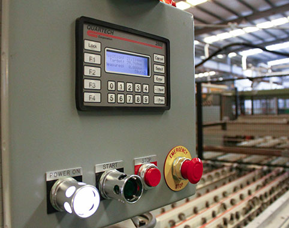
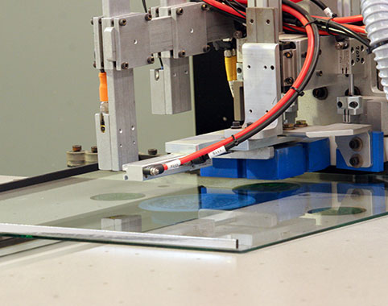
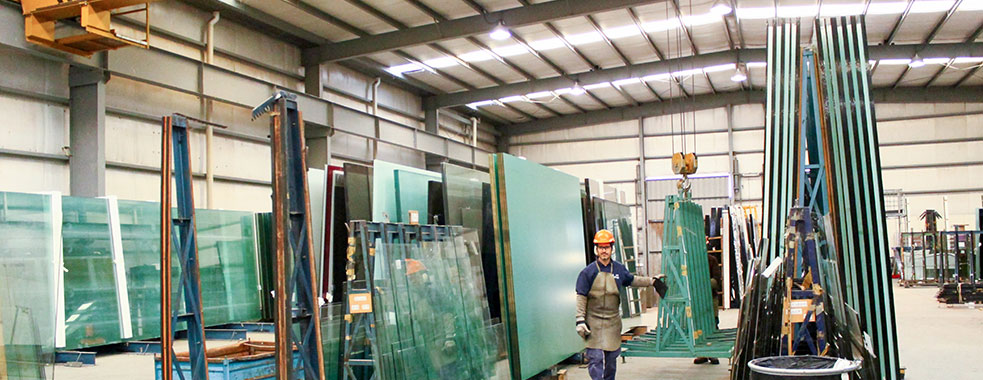

La Casa de los Cristales, fundada en el año 1962 por nuestros actuales dueños y socios, es hoy una de las empresas distribuidora y procesadora más importante y prestigiosa del país. Representamos y elaboramos productos de primera calidad dentro del mercado nacional e internacional aplicado a la construcción y arquitectura. Participamos también del mercado de la madera, con productos tanto nacionales como internacionales, así como productos adicionales directamente relacionados con el rubro y la construcción. De esta manera nuestra empresa cuenta con dos áreas que interactúan entre sí permanentemente. 'División Maderas' y 'División Vidrios' logran así inmejorables resultados y una presencia en el mercado de gran seriedad y respeto.
 Desde el origen hasta nuestros días los objetivos están centrados en satisfacer a los clientes a través de un servicio eficiente, continuo y personalizado. Para esto estamos en permanente contacto humano con ellos, compartiendo y ofreciendo toda nuestra trayectoria, capacidad, tecnología y calidad de nuestros productos. Contamos con una estructura edilicia en el centro de la ciudad de aproximadamente 4600 mts2 cubiertos donde funcionan las oficinas de ventas y administración, junto a la División Maderas. En el Parque Industrial 2 de la ciudad de Olavarría funciona nuestra nave industrial (2.500 mts2) para el proceso y la industrialización del vidrio, equipada con maquinaria de última generación y espacios óptimos para el trabajo con medidas de hoja 'jumbo' de vidrio, ubicada en un predio de 25.600 mts2.
De cara al futuro nos mantenemos en un crecimiento continuo en cuanto a nuevos mercados, tendencias, sistemas y tecnologías, que evolucionan permanentemente dentro del contexto mundial, con la idea de trasladar el mismo a nuestra industria y a vuestro alcance. El objetivo de nuestra empresa esta centrado en brindar soluciones rápidas e inteligentes a través del servicio asistido al cliente en donde se pueden concretar compras completas de productos destinados a obras de diferentes envergaduras, calidad y complejidad. En La Casa de los Cristales trabajamos junto a nuestros clientes bajo parámetros inmejorables de servicio, calidad y eficiencia haciendo de los mismos una característica muy reconocida de nuestra trayectoria en el mercado nacional e internacional.